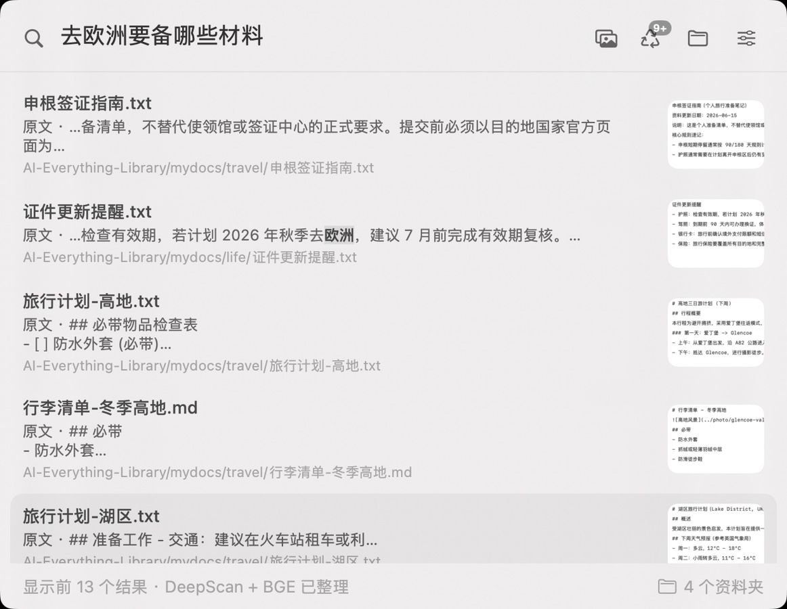
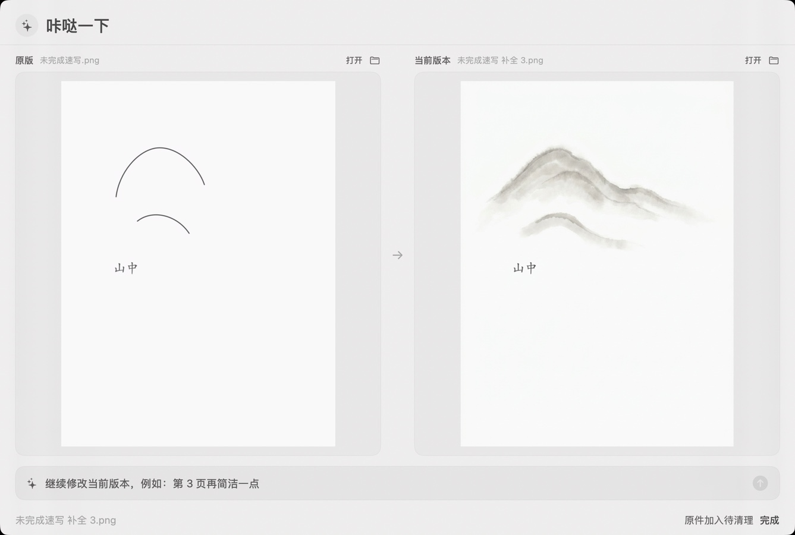

LOCAL BY DEFAULT
日常寻找，留在本机。
默认搜索不需要上传个人文件。
你的资料，在你的 Mac 上建立联系。
- 文件索引与关键词检索
- 本地向量检索
- 已安装模型的本地 AI 理解
- 索引与理解结果默认本机保存
LOCAL-FIRST AI FOR YOUR FILES
AveryMore
找得到，更用得好。
让 AI 理解你的文件，找到你想要的内容，
让已有资料，产生新的价值。
为 Mac 而设计 · v0.1.0 · Apple Silicon

01 / FIND EVERYTHING
忘了文件名，也没关系。
说出内容、用途，或脑海里的画面，
从记得的那一点，找回完整的文件。
不必记住文档标题。签证指南、证件提醒和旅行清单，都能从一次自然的描述开始找。
一时想不起“比萨斜塔”，也可以描述记忆里的样子，从本地图片中寻找对应的画面。
不用逐个打开数字命名的视频。描述蜿蜒公路和成排茶田，找到相关视频与命中的时间位置。
02 / UNDERSTAND
有些工作，可以在你搜索之前完成。
在设备运行并启用相关功能时，AI 在后台逐步理解文件，把成果留在本机。
从你选择的资料夹开始
FTS5 + EmbeddingGemma
Qwen3-VL 8B 逐步分析
索引与理解结果留在本机
为后续检索补充线索
先搜起来，再慢慢完善。基础索引完成后即可开始搜索，无需等待所有 8B 分析完成。
电脑在运行，理解才继续。后台分析需要启用相应功能；休眠或关机后不会继续计算。
FTS5 负责关键词检索，EmbeddingGemma 提供语义表示；Qwen3-VL 8B 提前分析文件并生成摘要。摘要再编码为可检索的向量，补充后续召回。搜索无需每次同步等待 8B 重读文件。模型组合与可用功能以最终发布版说明为准。
03 / REDISCOVER & REUSE
那篇写到一半的草稿，
那张还没画完的速写。
找到它，然后接着做。
从已有内容，走向新的可能
功能持续完善与验证中
翻出搁置的草稿、作品与旧材料，找到值得继续的起点。
从建议中选择，或写下自己的要求，尝试完善、续写或重新组织。
对照原始内容检查新版本，再决定怎样继续使用。
画面来自已有演示录屏，不代表每种文件与创作方向均已稳定支持。再创作需要自行配置 OpenRouter API Key，所选内容或摘录可能发送至云端模型；生成结果请人工核对。
04 / A CLOSER LOOK
正确结果在前十条里，和排在第一条，
是不同的寻找体验。
467 份文件 · 65 道共同覆盖查询
内部探索性测试
按冻结指定目标统计：Top1 为 57/65 与 44/65；Top10 均为 63/65。不代表所有用户场景的普遍准确率。
同一台 M4 Mac mini、467 份文件，80 题单轮测试；其中 76 题有明确目标，本页仅比较双方共同覆盖的 65 题。题目来自既有题库，并非独立新题。相关性尚未完成独立人工复核，18 题的合理替代文件未计入；隔离库初始化移除了 10 条旧原文向量，影响未量化。共同覆盖查询的 Top10 双方持平，对照工具在其中 5 题的指定目标排名更靠前。数据来自提供的产品介绍文档，属于内部探索性结果。
05 / YOUR FILES, YOUR CONTROL
本地优先，也把云端的边界说清楚。
是否使用云端能力，由你选择。
LOCAL BY DEFAULT
默认搜索不需要上传个人文件。
你的资料，在你的 Mac 上建立联系。
CLOUD, WHEN YOU CHOOSE
“咔哒一下”的部分再创作功能，
通过 OpenRouter 调用第三方模型。
本地模型的下载需要网络。若启用云端搜索判断或精搜，查询与候选片段也可能发送至云端；具体范围请以发布版隐私说明为准。
READY FOR WHAT’S NEXT
Find everything. Make more of it.
正式安装包已发布，可直接下载 DMG（1.69 GB）。
下载 DMG → 打开磁盘映像 → 将应用拖入 Applications（应用程序）→ 按引导选择资料夹与本地模型。
此版本未经 Apple 公证。若被 macOS 拦截，请按正式 Release 的安装说明，在“系统设置 → 隐私与安全性”中选择“仍要打开”。